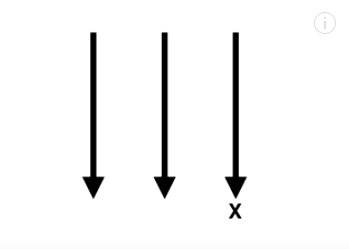
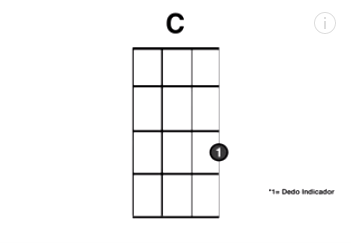
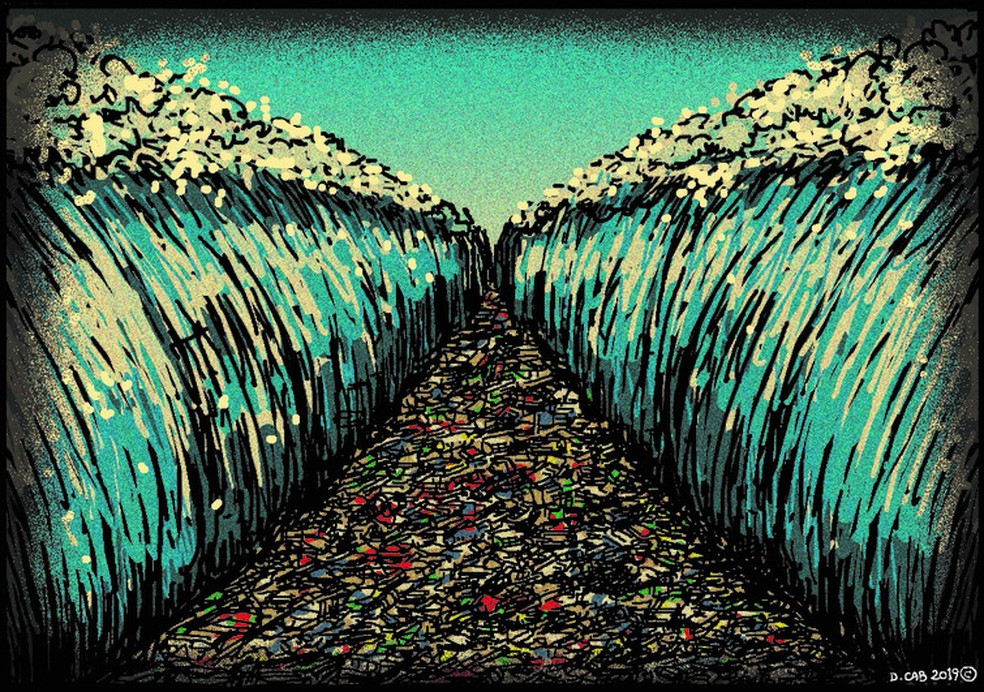

#100daysofukulele
Um certo dia decidi comprar um ukulele, por algum motivo abandonei ele, com essa crise do corona me peguei um dia tentando voltar a tocar, era algo legal que eu particularmente sempre quis dominar por isso voltei e decidi colocar esse desafio junto para levar a serio:
- 1hr por dia tenho que dedicar estudar ukulele seja tocar ou ler tablaturas ou algo mais sobre música
- O projeto em que trabalhei será postado aqui como post e no meu Twitter
- A cada 7 dias de projeto terei que me gravar tocando uma musica, seja qual for
- Caso fure tenho que pagar alguma punição (ainda não pensei nisto)


#2 dia: Exercicios de velocidade
Oi, bem vindo ao segundo dia, parece que ocorreu tudo bem e conseguindo dar segmento ao projeto...
Leia mais →

3# dia: Aprendendo Sadness and Sorrow (Naruto) - Minimal Version
AAAAAA o post mais aguardado, clica ai para saber mais...
Leia mais →

4# dia: Construção de acordes básicos
Aqui creio que será o divisor de aguás deste desafio!
Leia mais →